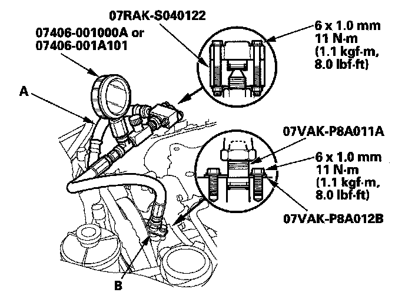
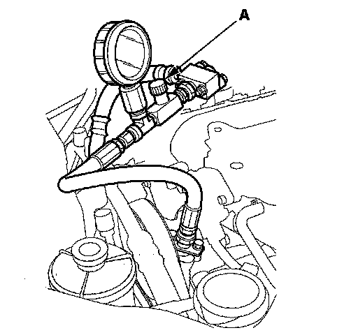

Pump Pressure Test With T/N 07406-001000A or T/N 07406-001A101
Pump Pressure Test with T/N 07406-001000A or T/N 07406-001A101Special Tools Required
^ P/S joint adapter (pump) 07VAK-P8A011A
^ P/S joint adapter plate (pump) 07VAK-P8A012B
^ P/S joint adapter (hose) 07RAK-SO40122
^ P/S pressure gauge 07406-001000A or 07406-001A101
Check the fluid pressure as follows to determine whether the trouble is in the pump or steering gearbox.
1. Check the power steering fluid level.
2. Disconnect the pump outlet hose (A) from the pump outlet with care so as not to spill the power steering fluid on the frame and other parts, then install the P/S joint adapter (pump) on the pump outlet (B) with the P/S joint outlet plate.

3. Connect the P/S joint adapter (hose) to the P/S pressure gauge, then connect the pump outlet hose to the P/S joint adapter (hose).
4. Install the P/S pressure gauge to the P/S joint adapter (pump).
5. Open the shut-off valve (A) fully.

6. Start the engine and let it idle.
7. Turn the steering wheel from lock-to-lock several times to warm the fluid to operating temperature at 158°F (70°C).
8. Measure steady-state fluid pressure while the engine is idling. If the pump is in good condition, the gauge should read no more than 1,470 kPa (15 kgf/cm2, 213 psi).
If it reads high, check for:
^ Clogged or deformed feed or return line between the pump and the steering gearbox.
^ Clogged valve body unit.
9. Let the engine idle, and gradually close the shut-off valve and immediately read the pressure.
NOTICE: Do not keep the shut-off valve closed more than 5 seconds or the pump could be damaged by over-heating.
10. Immediately open the shut-off valve fully. If the pump is in good condition, the gauge should read at least 8,920-9,420 kPa (91-96 kgf/cm2, 1,290-1,370 psi). A low reading means pump output is too low for full assist. Repair or replace the pump.